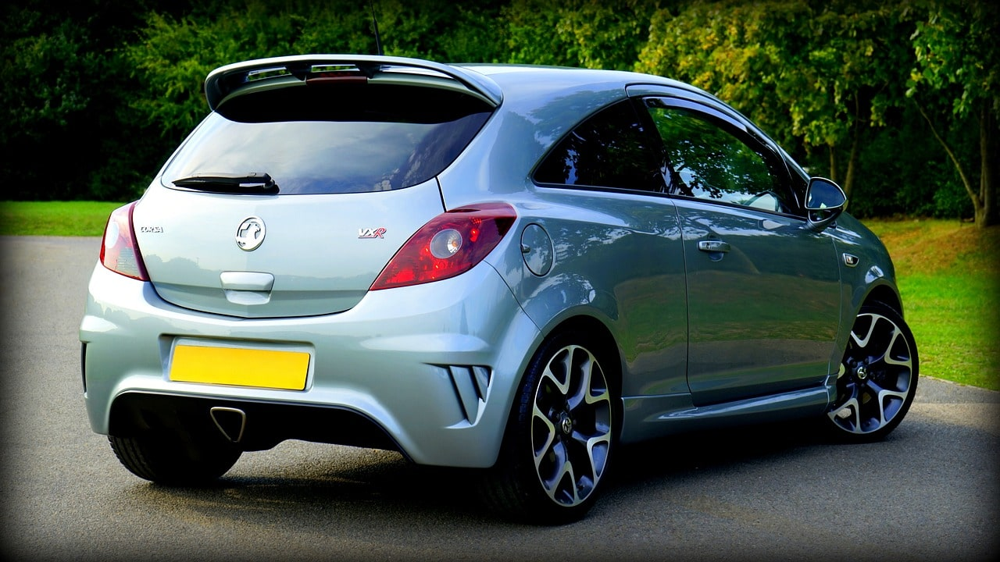
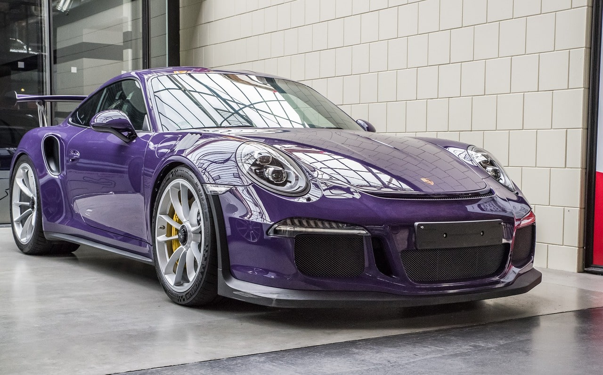
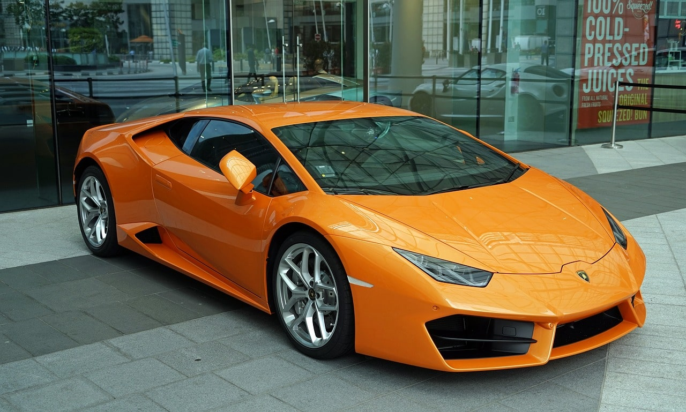

Welcome
Os carros são muito mais do que meros meios de transporte. Eles representam estilo, desempenho e status, oferecendo uma experiência única para cada motorista. Nesta página, exploramos o fascinante universo dos automóveis, desde os veículos casuais que acompanham o dia a dia, passando pelos esportivos que fazem o coração acelerar, até os luxuosos que redefinem o conceito de sofisticação.
Carros Casuais
Carros casuais são ideais para o dia a dia, oferecendo praticidade e conforto. Com design simples e econômico, são perfeitos para deslocamentos urbanos e viagens curtas. Eles combinam eficiência de combustível e manutenção acessível, tornando-se a escolha ideal para quem busca um veículo confiável e funcional.
Carros Esportivos
Carros esportivos são sinônimos de velocidade e emoção. Projetados para alta performance, esses veículos oferecem uma experiência de condução emocionante, com motores potentes e design aerodinâmico. São perfeitos para quem busca adrenalina e estilo, destacando-se por seu desempenho superior e estética marcante.
Carros Luxuosos
Carros luxuosos representam o ápice do conforto e da sofisticação. Com interiores refinados e tecnologia de ponta, esses veículos oferecem uma experiência de condução incomparável. São escolhidos por quem valoriza elegância, exclusividade e um nível excepcional de acabamento. Mais do que transporte, eles proporcionam um estilo de vida de prestígio e status.
